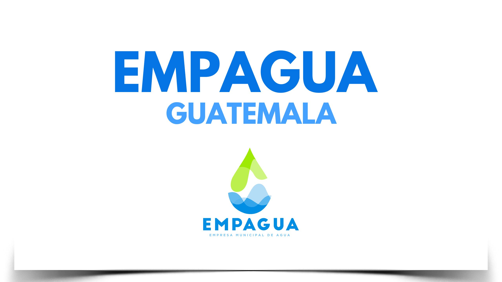

¿Cómo se lee un medidor?
Mensualmente un equipo de lectores de EMPAGUA llega a cada domicilio para medir el consumo del medidor de agua. En la mayoría de cuentas, el lector lleva consigo un dispositivo móvil, denominado Hand-Held para realizar la lectura.
¿Necesitas realizar un cambio de medidor?
Cuando recibas una notificación de cambio de medidor o por algún motivo sabes que tu medidor está en mal estado, debes de cambiarlo. Estos son los requisitos y tarifas.
Así mismo, EMPAGUA cuenta con el servicio de Orientación e Información al cliente. ¡Comunícate!
¿Cómo saber el valor de consumo de agua?
EMPAGUA emite mensualmente un Cobro Mensual que refleja el valor del consumo en metros cúbicos (m3) y el valor facturado depende del rango de consumo
Actualmente EMPAGUA emite tu factura de forma electrónica (FEL), al momento que realices tu pago llegará a tu correo electrónico tu factura
¿Deseas comunicarte con EMPAGUA?
EMPAGUA cuenta con el servicio de Orientación e Información al Cliente, por lo que ponemos a tu disposición:
• Call Center 1551
•Atención presencial en Palacio Municipal y en cualquier Mini Muni
¡Comunícate!